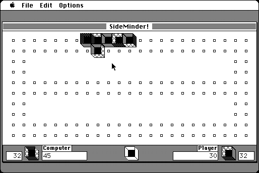

Download
SideMinder1.1.zip (86K) SideMinder! 1.1 repackaged into a zipped hfs disk image and checksum file. The disk image can be mounted with Mini vMac.
SideMinder1.1.sea.hqx (143K) SideMinder! 1.1 in the original format.
copyright: John V. Holder
mod date: Jun 18, 1996
license: shareware
official url :
SideMinder Description
"You try to get rid of all your game pieces before the computer does and also try to get the highest score by placing the pieces in places where the most colors match up!"

If you find these downloads useful, please consider helping the Gryphel Project, which hosts them.
Here are the md5 checksums for the downloads, signed with Gryphel Key 5:
--------- GRY SIGNED TEXT --------- 3d483810d78ee1b4bc64c1fa0140242a SideMinder1.1.zip f566e252cbca0d0a4698fee97f771afb SideMinder1.1.sea.hqx ------- BEGIN GRY SIGNATURE ------- Gry/4Xa8CFcUzxdN/L2EHCHo2VXOJn0xaiFkbMMF/2cxcHtxlOmm8uQxvGJKOMIk HNEE80XwRHrs+2J4aou9UNlgx0H+eQVGSAPx4cHZxyqioAmYDEeU87wWDSISfJBb geEN/+AfqGj6uwLMCzd0v/ZcCHEDBciuApljSNNcDvqwg2ub8bVAxdVAsci27505 -------- END GRY SIGNATURE --------